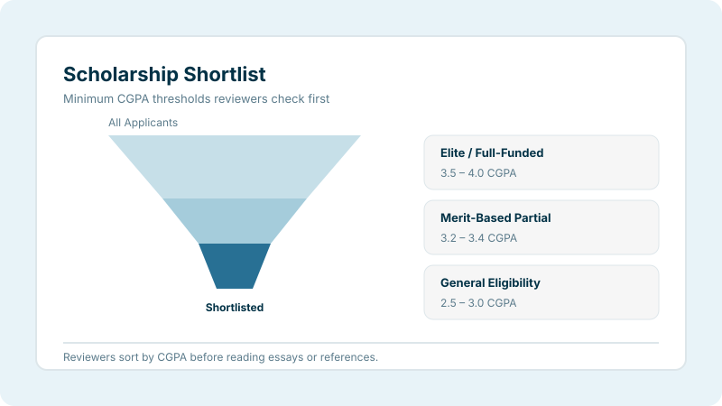

CGPA for Scholarships: Minimum Requirements by Program
Published on: 26/03/2026 · Updated: 11/07/2026Why Your CGPA Is the First Thing Scholarship Boards Look At

Before any scholarship committee reads your essay or checks your recommendation letters, someone, or something: checks your CGPA. Use our CGPA calculator to confirm your exact score before you start applying, because in a high-volume application cycle, that number is the very first filter you have to clear.
Scholarship boards receive thousands of applications every cycle. Fully funded programs like Chevening and the Chinese Government Scholarship routinely see far more applicants than seats. Reviewers sort by CGPA first, shortlist the strongest academic profiles, and only then move on to essays, references, and interviews. If your CGPA does not clear the threshold, the rest of your application may never be read by a human at all, which is exactly why getting the number right, and presenting it correctly, matters this much.
For Bangladeshi students specifically, this creates an extra step most guides skip: converting your CGPA correctly. Most scholarship portals expect a 4.0 scale, SSC/HSC results in GPA form, and sometimes a percentage equivalent, and getting any of these wrong on the form can cost you a shortlist slot before a human ever reads your essay.
The Golden Thresholds: What Each Scholarship Tier Requires
| Scholarship Tier | Min CGPA (4.0) | Min CGPA (10.0) | Competitive Standing |
|---|---|---|---|
| Elite / Full-Funded | 3.5 – 4.0 | 8.5 – 10.0 | Top 5–10% of class: highly selective |
| Merit-Based Partial | 3.2 – 3.4 | 7.5 – 8.4 | Moderate to high competition |
| General Eligibility | 2.5 – 3.0 | 6.5 – 7.5 | Baseline: minimum entry level |
Programme-Specific Requirements: Major Scholarships
| Programme | CGPA (4.0) | Country | Key Notes |
|---|---|---|---|
| Chevening | ~3.2 (no fixed cutoff) | UK | 2:1 equivalent + 2 years' work experience required |
| DAAD | 3.5+ | Germany | Work experience (2+ years) also heavily weighted |
| Commonwealth | 3.3+ (2:1) | UK | First Class (3.7+) needed for Shared Scholarships |
| Fulbright | 3.0 min / 3.5+ competitive | USA | Leadership and project strength weigh heavily |
| Türkiye Bursları | ~2.5 (UG) / ~3.0 (PG) | Turkey | ~90% required for health sciences |
| CSC (Chinese Govt.) | ~3.3 competitive | China | University ranking can offset a lower CGPA |
| MEXT | SSC/HSC GPA 4.5/5.0 (UG); 2.3/3.0 (PG) | Japan | Strong research proposal can offset a weaker GPA |
| Australia Awards | ~3.5 competitive (no fixed floor) | Australia | Merit + development impact assessed holistically |
| Canadian Excellence Tier 1 | ~3.9 | Canada | Requires 90%+ average: top-decile standing |
Converting Your Bangladeshi CGPA or GPA for Scholarship Forms
Almost every international scholarship threshold above is quoted on the 4.0 scale, but Bangladeshi students hold results on at least three different scales: the 4.00 university CGPA, the 5.00 SSC/HSC GPA, and occasionally an older 5.00 university scale from certain affiliated colleges. Mixing these up on an application form is a common, avoidable mistake.
- Convert your university CGPA using our GPA ↔ CGPA converter before comparing it to any threshold on this page.
- If a form asks for a percentage instead of CGPA: common for Turkish and Chinese scholarship portals: use the CGPA to percentage calculator so your conversion matches the formula the reviewing institution expects.
- For MEXT and a few other programs, your SSC and HSC GPA (on the 5.00 scale) matter independently of your university CGPA: don't assume only your latest degree counts.
What to Do If Your CGPA Is Good but Not Great
| Strengthening Factor | What It Looks Like | Why It Helps |
|---|---|---|
| High GRE / GMAT / IELTS Score | GRE 320+, GMAT 700+, or IELTS 7.0+ | Signals academic and language readiness beyond CGPA |
| Research Publication | 1+ peer-reviewed paper | Often treated as equivalent to a meaningful GPA boost |
| Statement of Purpose | Strong, honest SOP | Explains dips; highlights rising trajectory and clear goals |
| Work Experience | 2–5 years of relevant, full-time work | Required outright for Chevening; strengthens DAAD and Fulbright |
| Leadership / Community Impact | Verified, specific impact: not just membership | Weighted almost as heavily as academics for Chevening and Türkiye Bursları |
Real Chevening interviews back this up directly: Bangladeshi scholars have said the essays and demonstrated leadership were what actually separated shortlisted candidates from rejected ones, not marginal CGPA differences. A very good: not perfect: CGPA paired with a specific, well-argued career plan consistently outperforms a near-perfect CGPA with a generic application.
The AI Screening Warning
| Cutoff Type | What It Means | What You Should Do |
|---|---|---|
| Recommended Cutoff | Preferred but not absolute | Apply even if slightly below: a strong holistic profile may still get reviewed |
| Mandatory / Hard Cutoff | Automatically filtered: no exceptions | Do not apply if below: the application will be auto-rejected |
⚠️ Critical Action: Email the scholarship office or the relevant embassy in Dhaka to confirm whether the published CGPA requirement is a hard cutoff or a recommended guideline before you pay any application fee or invest weeks writing essays.
Quick Summary
- Elite / Full-Funded scholarships: roughly 3.5–4.0 (4.0 scale) or 8.5–10.0 (10.0 scale).
- Merit-Based Partial scholarships: roughly 3.2–3.4 (4.0 scale) or 7.5–8.4 (10.0 scale).
- General eligibility floor: roughly 2.5–3.0 (4.0 scale) or 6.5–7.5 (10.0 scale).
- Chevening and Australia Awards do not publish a fixed CGPA cutoff: they evaluate the whole profile.
- MEXT is the exception: it sets a specific SSC/HSC GPA benchmark (4.5/5.0) for Bangladeshi undergraduate applicants.
- Holistic strengths: work experience, research, leadership, and a sharp Statement of Purpose: can compensate for a slightly lower CGPA on most programs.
- Always confirm with the scholarship office whether a published threshold is a hard cutoff or a recommendation before applying.
🎓 Final Thought: Scholarships are awarded to the most complete, compelling candidate: not just the highest CGPA. Your CGPA opens the door; your full profile, and how clearly you can explain your plan for using the scholarship, determines whether you get chosen.
Frequently Asked Questions
What is the minimum CGPA for top scholarships?
Most elite, fully funded scholarships expect around 3.5+ on a 4.0 scale, and the most competitive ones look for 3.7 or higher. Requirements vary a lot by program, so always check the specific scholarship's published criteria.
What CGPA do I need for a Chevening Scholarship from Bangladesh?
Chevening does not publish a fixed CGPA cutoff. It asks for an undergraduate degree equivalent to a UK upper second-class (2:1) honours degree, roughly a 3.2 GPA on a 4.0 scale, plus at least two years of full-time work experience. Successful Bangladeshi applicants often have a CGPA of 3.3 or higher, but leadership and the essays matter as much as the number.
What CGPA is needed for DAAD and Fulbright scholarships?
DAAD typically expects a "First Class" equivalent, around 3.5 on a 4.0 scale or 8.5 on a 10.0 scale, and values 2+ years of relevant work experience. Fulbright's official minimum is a 3.0 GPA, but most funded applicants present 3.5 or higher alongside strong leadership and community involvement.
What CGPA does Türkiye Bursları require for Bangladeshi students?
Türkiye Bursları asks for roughly 70% average (about 2.5 on a 4.0 scale) for undergraduate applicants and 75% (about 3.0 on a 4.0 scale) for master's and PhD applicants. Health science programs such as medicine and dentistry require around 90%.
What GPA is required for the Chinese Government Scholarship (CSC)?
There is no single official minimum, but a cumulative GPA of around 3.3 on a 4.0 scale (roughly 80%) gives Bangladeshi applicants a realistic chance at CSC Type A. Master's applicants generally need 55–65% or the equivalent CGPA in their bachelor's degree, and university reputation and English proficiency also factor into selection.
What GPA does the MEXT scholarship need from Bangladeshi students?
For undergraduate MEXT applicants from Bangladesh, the Embassy of Japan typically asks for a GPA of 4.5 in both SSC and HSC on the Bangladeshi 5.0 scale. For master's and PhD applicants, MEXT requires a minimum GPA of 2.30 out of 3.00 on its own conversion scale, though truly competitive applicants are usually close to a perfect converted score.
Can a lower CGPA be compensated for scholarships?
Yes. Strong GRE/GMAT scores, research publications, leadership experience, relevant work experience, and a well-written Statement of Purpose can offset a slightly lower CGPA, especially for scholarships like Chevening and Fulbright that evaluate the full profile rather than academics alone.
Is the CGPA requirement always a hard cutoff?
Not always. Some scholarships publish a flexible or recommended threshold, while others use a strict automated screening cutoff that rejects applications below the line. Always confirm directly with the scholarship office or embassy before assuming either way.
My university uses a 5.0 CGPA scale. How do I compare it to these requirements?
Convert your CGPA to the 4.0 scale before comparing it against any scholarship's stated requirement, since almost every international threshold is quoted on the 4.0 scale. Use our free GPA-to-CGPA converter to do this instantly and avoid under- or over-stating your eligibility.